墨与纸 · 一个 Markdown 编辑器的手记
版本：v0.3.1 · 2026-11-21
写给：正在找一款"能安心写字"的编辑器的你
配图：assets/内是真实界面截图；两张示意图用 Mermaid 写在正文里
另一份：按任务查操作看 帮助中心；按菜单逐项查功能看 功能指南
一、我为什么做这个
我叫 cuman。参与维护 Blue Topaz 主题，做的 Blue Topaz example 拿到 2.6K star；开发的 Editing Toolbar 插件有 210 万次下载，常年排在下载榜前二十；还有 Floating TOC 这些；PKMer 知识库一万多篇文章，全部开源。
我大概是这套生态里最不该说它坏话的人。但也正因为待得够久，我最清楚它的上限。
凌晨一点，我为了把一篇笔记导出成 Word，在插件市场里翻了四十分钟——不是没有插件，是插件太多。那一刻我意识到：我维护的不是笔记，是一套系统。
我们花了十年，把 Markdown 变成一件需要"配置"的事：主题、插件、快捷键、CSS、工作区布局。每个人打开同一个文件夹，看到的是不同的软件。格式本身也是割裂的——源码一套，阅读一套，同一段字在两个视图里长得不一样。
可大多数人只是要记点东西，不是来折腾工具的。
于是很多人去了 Typora，因为简单。可文档一多它管不动，你习惯的双链它也不认。最后两个软件并存：Typora 写，Obsidian 存，甚至有人开 VS Code 管 md。工具越来越重，重到你开始为它服务。
我一直觉得，笔记应该像书。同样的内容，换个出版社，版式一乱，读起来的感觉就变了，思绪也跟着乱。你只想找到那本最熟悉的书——纸微微发黄，有淡淡的书香，翻开就是你的字。
所以有了 Morz，墨与纸：繁归于简，墨落于纸。
打开就是版式，表格能算，导出能交差，文件还是你的 .md，轻且全端，常用的全在里面。
我不反对插件。我反对的是：为了一个本来很简单的需求，先学会一套生态。
完整的故事在 故事 里。
二、它长什么样
先不谈功能，看三张图就够了。
这是桌面版的写作界面。左边是文件夹，中间是正文，右边是这篇的大纲。你看到的标题、任务清单、表格，就是最终的版面——没有"编辑 / 预览"两套东西。
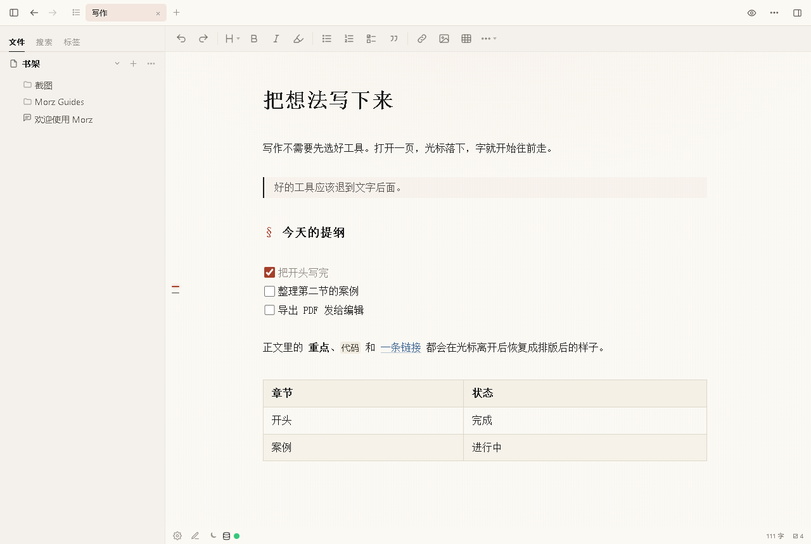
晚上写东西，一键切深色。正文、表格、侧栏一起换，不是给正文盖一层黑纱：
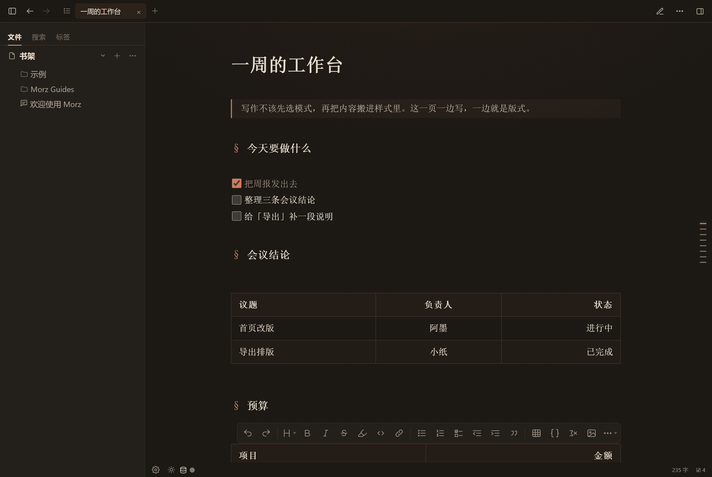
手机上打开同一篇，版式还在，工具栏收成一行：
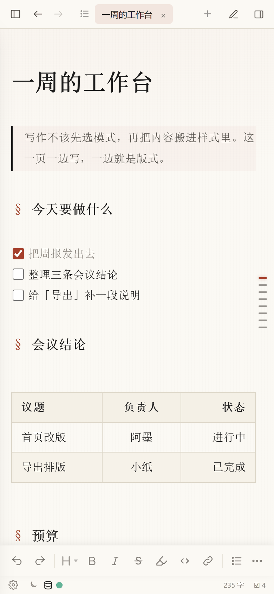
如果你只想知道"好不好看"，到这里就够了。下面讲怎么用。
三、第一次打开
第一次启动，你只会看到一个页面：
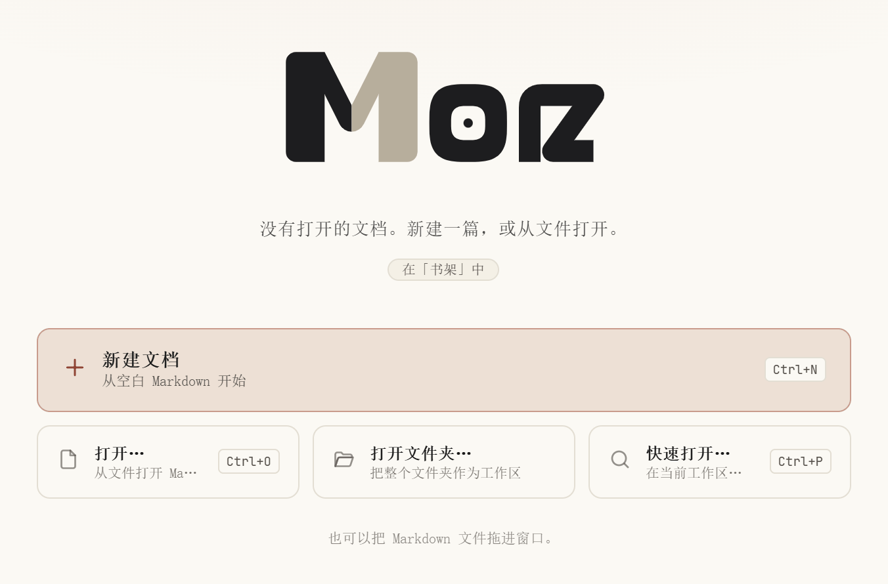
大多数人会犹豫：是"打开…"还是"打开文件夹…"？
我的建议永远是后者。
选一个你放笔记的文件夹——注意是文件夹，不是单个文件。这一步决定了后面所有体验：Morz 会把整个文件夹当成一个工作区，左边列出里面所有的 .md 和子文件夹，点一下就打开，切文件不丢位置。
打开单个文件也能用，但它就像在没有地址的地方写信：能写，只是随时会找不到邻居。
进去之后，先记住四件事，别的都可以慢慢发现：
- 回车就是换行。 源码里只多一个换行符，你看到几行，源码就是几行。
- 空一行才是新段落。 连按两次回车。
Shift+回车是段内硬换行。Ctrl+Z撤销。 在表格里，它的行为比一般编辑器聪明一点（后面会讲）。
说个设计上的取舍：很多编辑器按一次回车就给你插一个空行，视觉上"跳两行"，源码里也真的多了一行空行。我一开始也这么做，后来发现它让"我写的"和"我看到的"对不上——于是改成了现在这样：所见即所得，逐行一致。
四、写字的手感
4.1 格式不用记
选中一句话，Ctrl+B 加粗，Ctrl+I 斜体，Ctrl+K 加链接。行首敲 # 是标题，- 是列表，> 是引用——和你用过的编辑器一样。
不一样的是链接。设置里可以选两种写法：
- Markdown：
[文字](https://…)，标准写法，任何地方都认； - 双链：
[[页面名]]，适合库内互链，点一下跳过去，目标文档里还能看到"谁引用了我"。
从 Obsidian 过来的朋友把这一项切成"双链"，写出来的东西在两边都能用。
4.2 那些"看起来很麻烦"的块
| 你想写 | 敲什么 |
|---|---|
| 代码 | 三个反引号 + 语言名 |
| 公式 | $$ 换行写 TeX 再 $$；行内用 $E=mc^2$ |
| 提示卡片 | > [!TIP] 换行写内容 |
| 边注 | ^[一句话] |
| 任务 | - [ ] / - [x] |
边注这个功能值得多说一句。写文章时经常有"这句要解释一下，但放进正文会打断节奏"的内容——^[...] 让它出现在页边。导出 PDF 或 Word 时，它会自动收进文末编号脚注，信息不丢，版面不乱。
五、表格：终于能算数了
我对表格的执念，来自每个月做一次的开销表。
以前在 Markdown 里做这件事是这样的：手数竖线、对齐、改一个数字要重排整行，想求和？切到 Excel，算完再抄回来。
Morz 的表格是能算的：
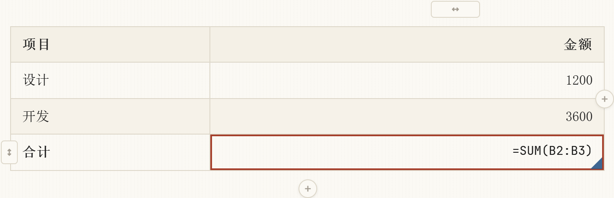
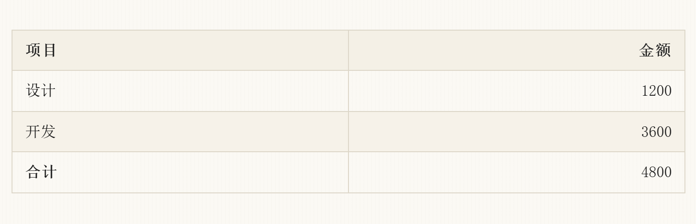
在任意格子里敲 =SUM(B2:B3)，移开光标就是结果。=AVERAGE(...)、四则运算、括号、多区域都支持。
更省事的是序列填充：点中一个写着 1 或 2026-01-01 的格子，按住右下角的小三角往下拖——数字、日期、星期、月份会自己续上。Excel 里有的那几种序列，这里都有。
还有几个用过就回不去的细节：
- 按
Tab跳到下一格，最后一格按Tab自动加一行； - 按住拖过多个格子，形成选区，
Ctrl+C/Ctrl+V可以整块搬到 Excel 再搬回来； - 正在编辑的格子按
Ctrl+Z，整格回到你刚进这格的样子，而不是一个字一个字地退； - 拖过填充柄再
Ctrl+Z，一次撤销整次填充。
第二条是我最常用的：从网页上拷一张表，直接粘进文档，不用再手动拼竖线。
六、一篇长文是怎么长出来的
写到第三十个文档，问题往往不再是"怎么写"，而是"东西放在哪"。
6.1 先有一张桌子
Morz 的侧栏顶部可以切换工作区。工作区就是你打开的那些文件夹：一个是"工作"，一个是"读书"，一个是"自己的东西"。
关键是：每个工作区会记住自己的现场。
上次在看哪一篇、右侧面板开着什么、分成了几个区、左边停在文件还是标签、两侧拖过多宽——切走再切回来，桌子还是你离开时的样子。
这一点在"上午写方案、下午整理读书笔记"的日子里特别省心，不用每次重新摆一遍。
6.2 标签页：能重排，也能找回来
标签可以拖着换顺序，顺序会跟着会话留下。
点标签条最左边的列表按钮，会展开所有打开的标签，每一项右侧写着它多久没被碰过：
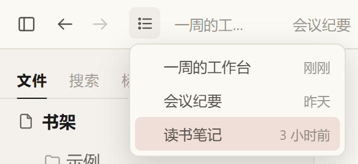
这个相对时间是给我自己看的——翻的时候一眼就知道哪篇是三天前开的、可以关了。
手滑关错了？同一个列表最上面有「撤销关闭：文件名」，点一下，文档回到它原来的位置，不是丢到最后一个。
6.3 右栏可以拆成上下两半
写长文时，我经常一边看大纲一边看这篇引用了谁。以前只能来回切面板。
现在把「出链」标签拖到右栏的下半区，就分成两个区，各有各的标签条；中间的分隔条可以拖，调比例。
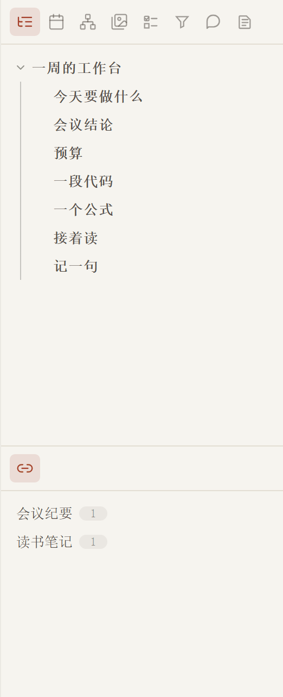
关掉某个区最后一个面板，那个区会自己收起来，但整个右栏不会跟着消失——它在原地留一句话：「右键此处添加面板」。右键空白处，勾选你要的面板就挂回来了。
6.4 找东西的四种方式
| 你记得什么 | 用什么 |
|---|---|
| 标题 | Ctrl+O 快速打开 |
| 正文里的某句话 | Ctrl+Shift+F 在文件中搜索 |
| 给它打过的标签 | 左侧「标签」 |
| 它和谁有关系 | 双击 [[双链]]；在那篇里看反链 |
七、让它好看（这一段我想多说点）
我承认，主题这件事上我有私心：一个每天要待几个小时的地方，应该顺眼。
Morz 内置七套主题，每套都有明暗两版：墨与纸、峡湾、索引卡、报刊、夜色、石墨、终端。
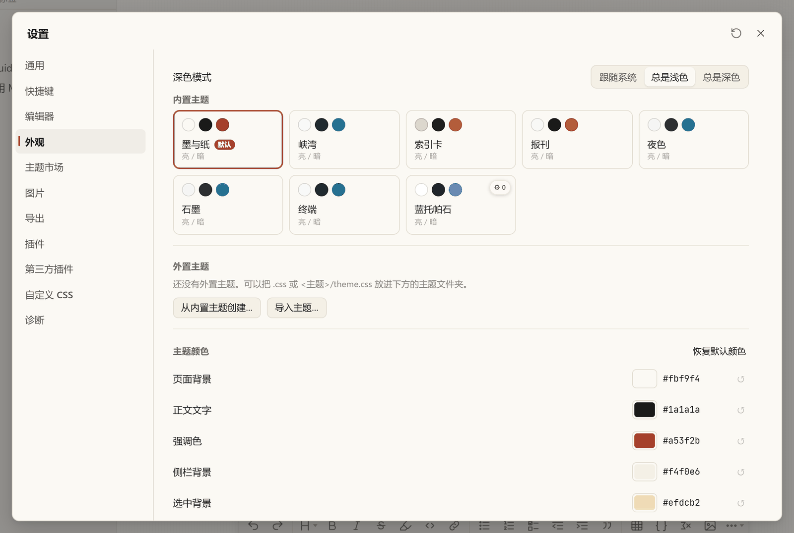
蓝托帕石（Blue Topaz）则是官方市场主题：设置 › 外观 › 主题市场 安装。它是社区主题的改编版，保留了上游的视觉签名——托帕蓝、蓝色系标题梯度、带色引用、圆角代码卡——同时可以被"调"。装好后，蓝托帕石卡片上的齿轮会打开一页主题设置：
- 六套配色：默认·蓝宝、极简、牛油果、蜂蜜牛奶、榛子巧克力、秋；每套都有对应的暗色变体，不是简单反色；
- 字体与节奏：正文字体、界面字体、等宽字体、行高、标题行高；
- 纸张：写作区底色、背景图、可读性遮罩；
- 侧栏：甚至可以给侧栏单独放一张背景图。
换个配色再换张背景，就是完全另一间书房。下面两张是真实使用中的配置，一张暗一张亮——同一篇文档，同一天：
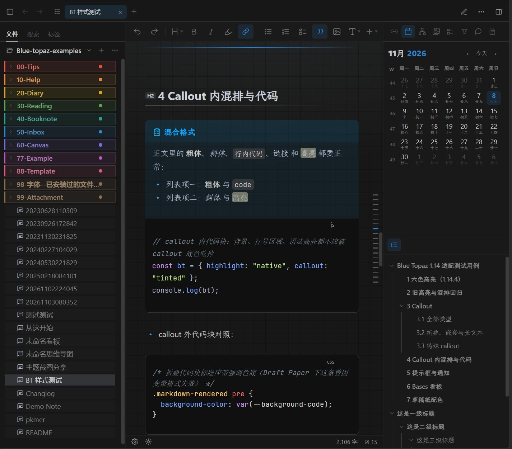
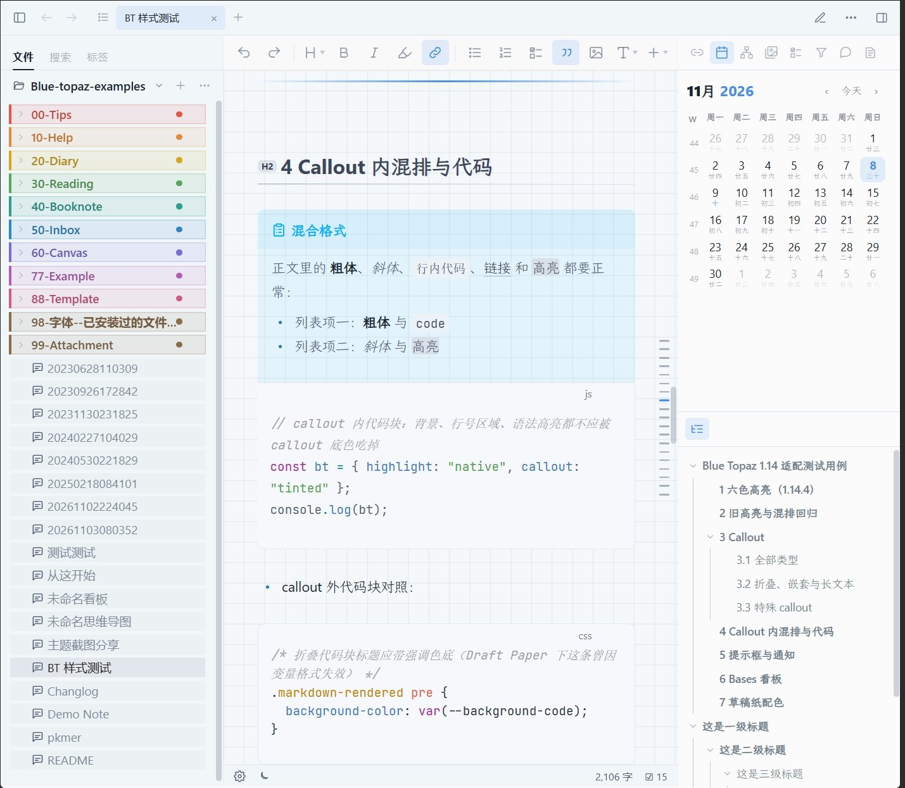
如果你用的是别的 Obsidian 主题，也可以把主题文件夹指过去（里面要有 theme.css 和 manifest.json），Morz 会通过兼容层加载。想自己改，就用「从内置主题创建…」复制一份出来，改 CSS。
同一条路还能调舒服度：字号、行宽、行高，正文里 Ctrl+滚轮 直接缩放；F8 专注模式只亮当前段；F9 打字机模式让输入行始终停在屏幕中间（也可以在快捷键设置里改键）。
八、交出去
写完了，总得给别人看。
文件 › 导出 里有三种：
PDF——这是桌面版和 Android 最值得炫耀的一项。它会真的分页：页脚有「当前页 / 总页数」，[TOC] 条目自动填上真实页码，PDF 阅读器的侧边栏里有书签，H1 → H2 → H3 分层，中文不乱码。发给同事，对方能直接跳章节。Android 上生成后直接分享出去。
Word (.docx)——Word 导航窗格里能看到大纲层级；图片画廊是并排的，不是一张一张竖着排满整页；Callout 保留左边框和浅底；代码块是灰底等宽字体；边注收进文末脚注。
HTML——跟随当前主题，图片内嵌，适合发网页或存档。
页面尺寸和页边距在 设置 › 导出 里：
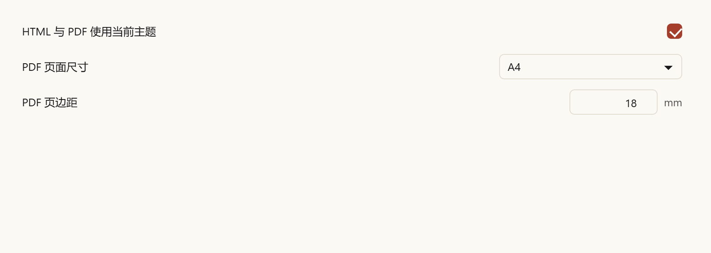
图 13 · 导出链路：同一份内容，按目标格式换"排版后端"，而不是各写一套样式。
说句实话：带书签的 PDF 目前只有 Windows 桌面和 Android 完整支持。macOS 和 Linux 走系统打印对话框，页码和排版正常，但没有侧边书签。这是平台能力差异，我没打算含糊过去。
九、手机上
同一篇文档在手机上，就是前面那张图 3 的样子：排版一致，工具栏收成一行。
手机端有两种用法：
- 授权一个文件夹（Android）：文件就在那里，用文件管理器能看到，换手机拷过去就能继续；
- 应用内草稿目录：省事，但卸载应用会一起删掉，记得先导出备份。
十、你的文件在哪
这是我最不想含糊的一段。
没有云端，没有账号，没有"同步服务"。 桌面版打开文件夹，改一次写一次，写的就是你磁盘上那个 .md。
想要多设备，把文件夹放进你自己的同步盘——OneDrive、iCloud、坚果云、Syncthing、Git 都行。Morz 只是读写的另一方，不介入同步，也不碰你的网盘。
图 14 · 文件模型
几条配套的安全网：
- 侧栏顶部工作区菜单 › 导出全部文档（备份）：整个工作区打包带走（也可在命令面板搜到）；
- 文件历史：每篇保留多个版本快照，在文件树右键或命令面板打开；条数和保留天数可调；
- 回收站：删掉的笔记先进回收站（桌面版在文件 › 工作区，网页版在侧栏文件夹菜单）；
- 本地错误日志：只写本机，不采集笔记正文、不上传。
关于隐私只有一句：它不需要知道你是谁。 没有登录，不会自动上传文档内容。
「允许外部 AI 客户端访问已打开的文件夹」默认关闭，开启后也只在本机生成一份清单，
关掉立即清空。
十一、和 Obsidian、Typora 比
我知道你在想什么：已经有那两个了，为什么还要试这个？
| Obsidian | Typora | Morz | |
|---|---|---|---|
| 写作即版式 | 接近，仍有源码片段 | 是，标杆 | 是，逐行一致 |
| 文件 | 本地 .md |
本地 .md |
本地 .md |
| 价格 | 个人免费，商用授权 | 付费 | 免费使用（内测），含商用 |
| 插件生态 | 极强 | 无 | 内置 + SDK（起步） |
| 双链 / 反链 / 块引用 | 强项 | 基本无 | 有 |
| Dataview 查询 | 完整社区生态 | 无 | 内置 DQL 子集 + dataviewjs |
| 表格 | 基础 | 基础 | 公式 · 填充 · 选区 · 整格撤销 |
| 导出 PDF | 插件 | 有 | 页码 + TOC + 书签（Windows / Android） |
| 导出 Word | 插件 | 无 | 大纲 + 画廊 + 脚注 |
| 手机 | 有 | 无 | Android / PWA |
更细的逐项对比、各自强项和迁移注意事项，见 竞品对比。
也说说什么时候别选 Morz：
- 你要完整的 Dataview 生态、Excalidraw、几千个社区插件——现在仍然是 Obsidian 的天下；
- 你要多人协作、评论、云端回收站——Morz 不做云端；
- 你要在 Mac / Linux 上一键导出带书签的 PDF——目前不行。
如果你恰好要的是：所见即所得、文件归自己、表格能算、导出能交差、手机也能写、还免费——那我们大概是同一类人。
十二、从 Obsidian / Typora 搬过来
搬家比想象中简单，因为不用导入：
- 直接用 Morz 打开你原来的 vault 文件夹；
[[双链]]、#标签、![[嵌入]]都原生支持；==高亮==、上下标这些 Typora 写法也认；- 主题：内置七套够用，更多去 设置 › 外观 › 主题市场（蓝托帕石在那里），或者把 Obsidian 主题文件夹指给 设置 › 外观 › 主题文件夹；
- 插件不通用——Morz 有自己的插件 SDK，Obsidian 插件需要重写。
快捷键大体一致，几个容易记混的：
| 动作 | Obsidian | Typora | Morz |
|---|---|---|---|
| 源码 / 实时切换 | Ctrl+E |
Ctrl+/ |
Ctrl+/ |
| 快速打开 | Ctrl+O |
— | Ctrl+O |
| 命令面板 | Ctrl+P |
— | Ctrl+P |
| 全库搜索 | Ctrl+Shift+F |
— | Ctrl+Shift+F |
冲突了就以 Morz 为准——所有命令都能在 设置 › 快捷键 里重新绑定。
附录 A · 快捷键
| 动作 | Windows / Linux | macOS |
|---|---|---|
| 新建 / 打开 / 保存 | Ctrl+N / Ctrl+Shift+O / Ctrl+S |
⌘N / ⌘⇧O / ⌘S |
| 关闭文档 | Ctrl+Alt+W |
⌘⌥W |
| 撤销 / 重做 | Ctrl+Z / Ctrl+Shift+Z |
⌘Z / ⌘⇧Z |
| 查找 / 替换 | Ctrl+F / Ctrl+H |
⌘F / ⌘H |
| 在文件中搜索 | Ctrl+Shift+F |
⌘⇧F |
| 快速打开 | Ctrl+O |
⌘O |
| 命令面板 | Ctrl+P |
⌘P |
| 加粗 / 斜体 / 链接 | Ctrl+B / Ctrl+I / Ctrl+K |
⌘B / ⌘I / ⌘K |
| 行内代码 | `Ctrl+Shift+`` | `⌘⇧`` |
| 高亮 | Ctrl+Shift+H |
⌘⇧H |
| 标题 1–6 / 正文 | Ctrl+1…Ctrl+6 / Ctrl+0 |
⌘1…⌘6 / ⌘0 |
| 引用 | Ctrl+Shift+Q |
⌘⇧Q |
| 无序 / 有序列表 | Ctrl+Shift+] / Ctrl+Shift+[ |
⌘⇧] / ⌘⇧[ |
| 任务列表 | Ctrl+Alt+X |
⌘⌥X |
| 源码 / 实时切换 | Ctrl+/ |
⌘/ |
| 阅读模式 | Ctrl+E |
⌘E |
| 专注模式 | F8 |
F8 |
| 打字机模式 | F9 |
F9 |
| 重新打开关闭的标签页 | Ctrl+Shift+T |
⌘⇧T |
| 切换标签页 | Ctrl+Tab / Ctrl+Shift+Tab |
⌃Tab / ⌃⇧Tab |
| 跳回光标 / 选区 | Ctrl+J |
⌃J |
| 下一个 / 上一个文件 | Ctrl+Alt+PageDown / Ctrl+Alt+PageUp（备用 Ctrl+Alt+↓ / ↑） |
⌘⌥PageDown / PageUp |
| 缩进 / 减少缩进 | Ctrl+[ / Ctrl+] |
⌘[ / ⌘] |
| 上移 / 下移列表项 | Ctrl+Shift+↑ / Ctrl+Shift+↓ |
⌘⇧↑ / ⌘⇧↓ |
| 折叠 / 展开列表项 | Ctrl+Alt+[ / Ctrl+Alt+] |
⌘⌥[ / ⌘⌥] |
| 删除当前表格行 | Ctrl+Shift+Backspace |
⌘⇧⌫ |
| 开发者工具（桌面） | Shift+F12 |
Shift+F12 |
| 放大 / 缩小 / 还原 | Ctrl+Shift+= / Ctrl+Shift+- / Ctrl+Shift+0 |
同左，用 ⌘ |
| 正文缩放 | Ctrl+滚轮 |
⌘+滚轮 |
| 表格下一格 / 下一行 | Tab / Enter |
同左 |
| 表格插入行 | Ctrl+Enter |
⌘+Enter |
放大 / 缩小 / 实际大小只在命令面板和快捷键里，不在菜单；打字机模式默认
F9，可在 设置 › 快捷键 改。
附录 B · 常被问到的问题
会偷偷上传我的笔记吗？
不会。没有账号系统，也没有云端。唯一联网的是更新检查和插件市场，和你的笔记内容无关。
换电脑怎么办？
把文件夹拷过去，或者用同步盘；在新电脑上打开同一个文件夹。主题、快捷键这些偏好要重新配，或者从旧设备的备份里恢复。
能同时开两个文件夹吗？
能，它们是两个工作区，侧栏顶部切换。各自记住自己的标签页、面板布局和上次看到哪。
导出的 PDF 为什么没有书签？
书签在 Windows 桌面版和 Android 上生效（直接生成 PDF）。macOS / Linux 走系统打印，页码正常，书签没有。
手机上的文件在哪？
授权过文件夹就在那个文件夹里；用草稿目录的话，卸载应用会一起删，先导出备份。
表格支持哪些公式？
现在有 SUM、AVERAGE、四则运算和括号，函数会继续加。序列填充支持数字、日期、星期、月份。
误关了标签或面板？
标签：点「所有标签」，最上面一条「撤销关闭」。面板：右栏空白处右键，重新勾上。
附录 C · 配图索引
| 图号 | 画面 | 在正文哪一节 |
|---|---|---|
| 图 1 | 写作界面（正文 / 任务 / 表格 / 大纲） | 二 |
| 图 2 | 深色外观 | 二 |
| 图 3 | 手机端 | 二、九 |
| 图 4 | 首次打开的空白页 | 三 |
| 图 5 | 单元格编辑态：公式源文 + 填充柄 | 五 |
| 图 6 | 同一格的公式结果 | 五 |
| 图 7 | 所有标签列表（相对时间） | 六 |
| 图 8 | 右栏上下分区 | 六 |
| 图 9 | 七套内置主题 | 七 |
| 图 10 | 蓝托帕石 · 暗色配置 | 七 |
| 图 11 | 蓝托帕石 · 亮色配置 | 七 |
| 图 12 | 导出设置 | 八 |
| 图 13 | Mermaid 示意图 · 导出链路 | 八 |
| 图 14 | Mermaid 示意图 · 文件模型 | 十 |
附录 D · 最后一句
如果你只需要一件事——插件生态，去 Obsidian；纯粹的沉浸写作、不介意付费，去 Typora。
如果你要的是：写的时候就是版式，文件永远是你的，表格能算，写完能交差，手机也能写，还不要钱——那就留下来试试。
有 bug、有想要的功能，欢迎告诉我。用得还行的话，也欢迎告诉别人。
— 墨与纸